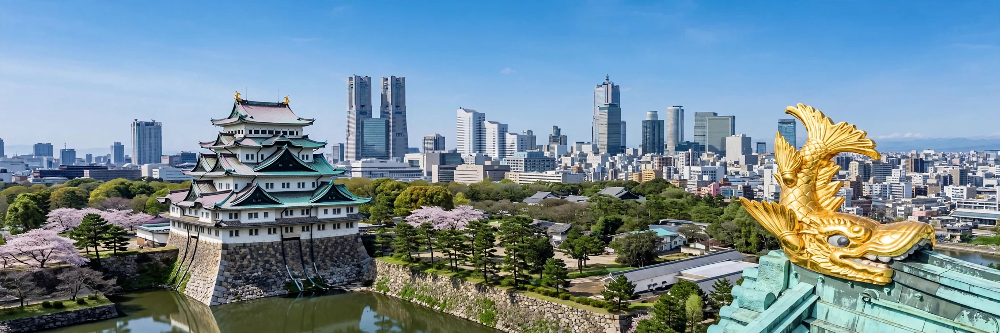

Nagoya (Japanese: 名古屋市, Nagoya-shi) is the largest city in Japan's Chūbu region, the capital of Aichi Prefecture, and Japan's fourth-most populous city with about 2.3 million residents (over 9.5 million in its metropolitan area). It is a major port and industrial centre, home to Toyota's wider automotive region, JR Central and the headquarters of several manufacturers.

| Country | Japan |
|---|---|
| Region | Chūbu (Tōkai) |
| Prefecture | Aichi |
| Population (city) | c. 2.33 million |
| Area | 326.4 km² |
Tokugawa Ieyasu built Nagoya Castle in the early 17th century, and the castle town flourished on the Tōkaidō road. It became a modern manufacturing hub for textiles, ceramics, machinery and aircraft. Heavy US bombing in 1945 destroyed much of the city, including the original castle keep (rebuilt in concrete in 1959; a wooden reconstruction project has followed). Postwar planning gave Nagoya its wide boulevards.
The Port of Nagoya is Japan's largest by cargo value, driven by automotive exports. Nagoya Station, served by the Tōkaidō Shinkansen, has twin towers; Chūbu Centrair International Airport serves the region. The SCMaglev and Railway Park and Legoland Japan are attractions.
Local cuisine (Nagoya meshi) includes miso katsu, tebasaki chicken wings, hitsumabushi eel and kishimen noodles. Sites include Atsuta Shrine, the Tokugawa Art Museum and Ōsu shopping district. The city's baseball team is the Chunichi Dragons.